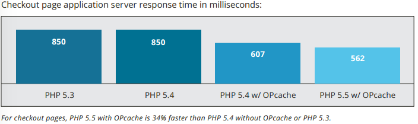
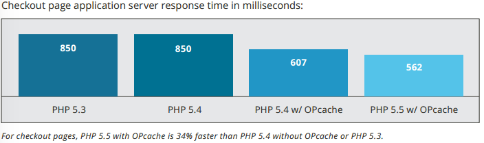
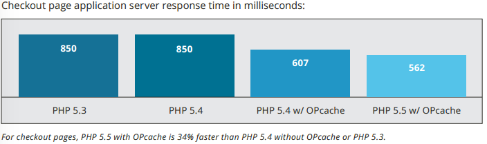

PHP and Magento - Performance
 

| Version | Release Date | Websites Marketshare |
|---|---|---|
| 5.2 | 02 November 2006 | 14% |
| 5.3 | 30 June 2009 | 35% |
| 5.4 | 01 March 2012 | 24% |
| 5.5 | 20 June 2013 | 7% |
| 5.6 | 28 August 2014 | 1% |
| 7.0 | November 2015 (?) | ?? |
E_ALL finally includes E_STRICTpassword_hashpassword_verifytry, catch, finally!A Trait is similar to a class, but only intended to group functionality in a fine-grained and consistent way
Varien_Object could be Varien_Trait
<?php
trait Varien_Trait {
public function setData($key, $value = null) {
$this->data[$key] = $value;
return $this;
}
public function getData($key) {
return $this->data[$key];
}
}
<?php
class SomeObject {
use Varien_Trait;
public function someFunction() {
$this->setData('Silly Example');
}
}
Iterator interfaceyield the value
class FizzBuzz {
public function getValues($num) {
for ($i = 1; $i <= $num; $i++) {
$value = ($i % 3) ? '' : 'Fizz';
$value .= ($i % 5) ? '' : 'Buzz';
yield $value ?: $i;
}
}
}
<?php
$fb = new FizzBuzz();
foreach ($fb->getValues(1000000) as $val) {
echo $val. PHP_EOL;
}

PHP to C++HPHPi - Custom interpreter for developmentPHP and Hack languages
Hack is a dialect of PHP created by FacebookPHP projects on GitHub passHPHPi is no longer required
gcclibmecachedlibmcryptmemcachedgeoip